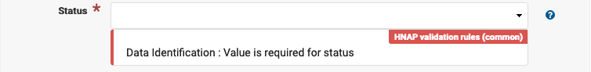
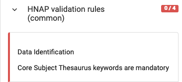
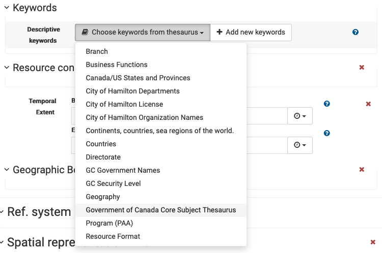
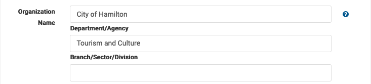

Validation¶
Records are defined using the North American Profile (NAP) which lays out the structure of the document, as well as checking how some of the values interact. Validating a document checks that are record is complete.
While invalided or partially complete records can be useful, validation is an important step in confirm the records are machine readable.
Schema validation is used to check the structure of the document, reporting on required elements, and if elements are in the prescribed order.
Schematron validation rules are used to double check the document values, and how values interact. As an example a schematron rule will check that the organization name is « Government of Canada ».
Technically we are working from the from the « Harmonized » North American Profile (HNAP) which has some Canadian checks for multi-lingual content.
Editor Validation¶
To validate a document from the editor:
Select the validate button at the top of the page.

Running validation from the editor¶
Feedback about the document structure (schema validation) is provided in the editor inline near the field which is incorrect.

Data identification publication date is required.¶
In the example above the xsd errors represent issues with the document structure. And the HNAP validation rules (common) provide feedback from checking document contents.
Feedback about document contents (schematron validation) is provided in the editor along the right hand side.

This reports the number of rules failed, if the rule is associated with a specific field (like the date check above) the message is shown in the editor near the problem. If the rule is checking the values are consistent between fields the message is shown here on the right hand side.
Data identification¶
To resolve data identification missing a publication date.
Data identification publication date is required.¶
Fill in a date value, there are options to provide a year, year and month, or a complete date.

Defining publication date as 2012¶
A calendar is provided when filling in a date, or date time.

Use of calendar to select a publication date¶
The same approach can be used data identification missing a creation date.
Astuce
Take care that creation date is before publication date.
To correct data identification status « Value is required for status ».
Value is required for status¶
Select one of the values from the drop down list, a tooltip provides the definition of each value.
To correct data identification missing topic category.

Data identification topic category is required¶
Start typing to see the predefined topic categories provided by the north american profile.

Autocomplete topic categories¶
Multiple topic categories can be used.
This one is a little tricky, data identification « core subject thesaurus keywords are manditory ».
Core subject keywords are required¶
This checks that the keywords section includes at least one describing the record subject using a list provided by the Canadian government.
Locate the Choose keywords from thesaurus actions, and choose Government of Canada Core Subject Thesaurus from the list.
Choose keywords from a thesaurus¶
Locate the heading for core subject thesaurus, and start typing to select one or more predefined keywords.

Historic subject recommendations¶
Cited responsible party¶
To fix cited responsible party missing email address.
Fill in email address.

Resource constraints¶
To address resource constraints missing temporal extent begin date or end date.

Value is required for Begin Date¶
Use the Begin Date and End Date fields to define the temporal extent. These values can be provided numerically for year and` year and month`, or using a calendar to define date `and `date and time.

Temporal extent begin and end date.¶
Distribution¶
To address distribution format missing file format and version details.

Locate heading. Each dataset may be available in several different formats, this message requires us to be very specific about the file format used providing both the format name and verison number.

Distribution format requires file format and file version¶
Select a file format from the list, and enter a file version number:
zip
The filename extension can often be used to determine format name, you may need to check the document properties to determine the specific version.

File format zip version 6.3.9¶
Examples:
pdfversion 1.4 as reported using operating system propertieszipversion 2.0 using zipinfo command line, apparently the zip format is still being developed with 6.3.9 being the latest 2020 release.
To fix distributor contact organization name.

The organization name is defined in three parts:
Government of Canada is required
A department name, type in an approriate value (or choose an autocomplete option)
A team or group name, optional
For this record we are supplying Tourism and Culture.
Organization name¶